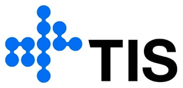

Proposta estratégica · TIS
Núcleo de
Scrum Masters.
Governança leve. Equipas mais autónomas. Entregas com maior previsibilidade.
Apresentação à Direcção01 · Propósito
Mais consistência.
Mais valor entregue.
Estruturar uma referência interna para orientar, acompanhar e desenvolver a actuação dos Scrum Masters — preservando a autonomia das equipas.
Visibilidade do fluxo, riscos, dependências e compromissos.
Práticas e indicadores mínimos, ajustados a cada contexto.
Mentoria, partilha de experiências e evolução das competências.
02 · Eixos de actuação
Três pilares.
Uma actuação integrada.
Eventos Scrum, impedimentos, maturidade, riscos e indicadores das equipas.
Modelos de actuação, dashboards, critérios e repositório de boas práticas.
Mentorias, workshops, comunidade de prática e trilhas de desenvolvimento.
03 · Modelo operacional
Presença na medida
da necessidade.
Acompanhamento contínuo de equipas estratégicas ou complexas.
Um Scrum Master apoia mais de uma equipa, conforme capacidade e maturidade.
Acompanhamento por período definido, com melhorias e transferência de autonomia.
Alocação orientada por prioridade, complexidade, impacto e necessidade de acompanhamento.
04 · Governança
Uma cadência simples
e transparente.
05 · Resultados e entregáveis
Gestão com evidências.
Melhoria contínua.
Matriz de responsabilidades, critérios de alocação e mapa das equipas acompanhadas.
Dashboard de fluxo, impedimentos, previsibilidade e maturidade.
Plano de capacitação, mentorias e comunidade de prática.
Repositório de boas práticas, acções de melhoria e lições aprendidas.
06 · Roadmap proposto
Implementar em ciclos.
Evoluir com evidências.
Estruturar
Definir liderança, papéis, cobertura e padrões mínimos.
Implantar
Seleccionar equipas-piloto e estabelecer indicadores iniciais.
Expandir
Fortalecer mentoria, comunidade e acompanhamento.
Consolidar
Avaliar maturidade, resultados e rever o modelo.
Sequência proposta, sujeita à validação da Direcção.
07 · Decisão da Direcção
Formalizar hoje.
Evoluir continuamente.
Para iniciar, propõe-se validar quatro decisões:
Formalização do Núcleo e designação do responsável.
Critérios de cobertura, alocação e articulação com o PMO.
Autorização para diagnóstico inicial e implementação faseada.
Indicadores e cadência de reporte à Direcção.